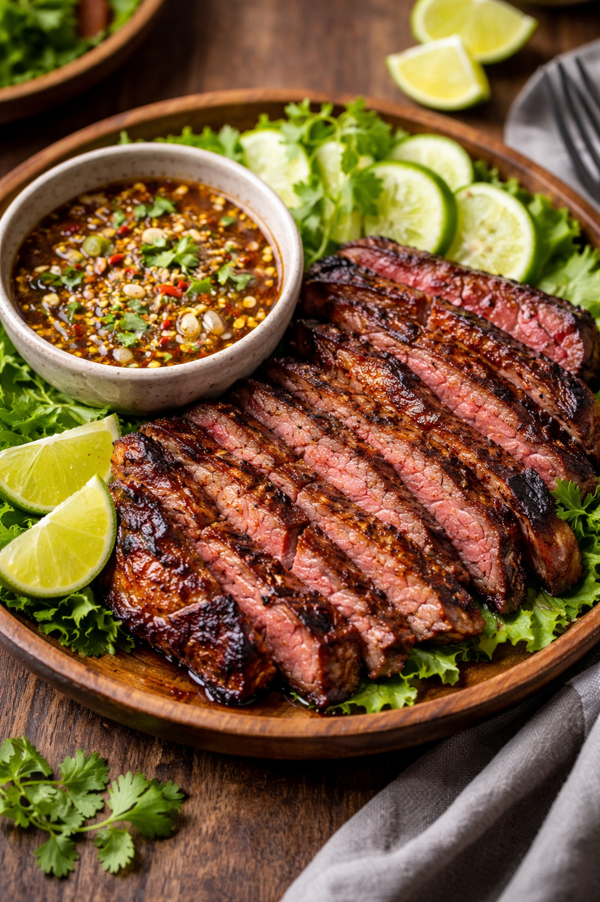

Crying Tiger
Crying Tiger

History
Crying Tiger (Suea Rong Hai) is a classic Thai grilled beef dish known for its bold, smoky flavor and
spicy dipping sauce. The name loosely translates to “the crying tiger,” with folklore suggesting the
meat is so good—or so juicy—that even a tiger would cry after losing it. Traditionally made with grilled
beef served alongside a fiery nam jim jaew sauce, the dish reflects Thailand’s balance of heat, acidity,
salt, and sweetness. It is especially popular in northeastern Thailand (Isan), where grilled meats and
chili-forward sauces are staples of everyday cooking.
Recipe
Steak
- Beef Steak (flank, skirt, or sirloin)
- Salt
- Black Pepper
- Cooking oil
- Ginger
- Red Chilies
- Vinegar
- Soy Sauce
- Bay Leaves
- Salt
- Black Pepper
- Cooking Oil
Nam Jim Jaew (Dipping Sauce)
- Fish Sauce
- Lime Juice
- Toasted Rice Powder
- Chili Flakes
- Palm Sugar
- Shallots
- Fresh Cilantro
Directions
- Season Beef: Lightly season steak with salt, pepper, and oil.
- Grill: Grill over high heat until nicely charred and cooked to desired doneness.
- Rest & Slice: Let beef rest, then slice thinly against the grain.
- Make Sauce: Mix fish sauce, lime juice, chili flakes, toasted rice powder, sugar, and shallots.
- Serve: Plate sliced beef with dipping sauce on the side. Serve warm.
Home